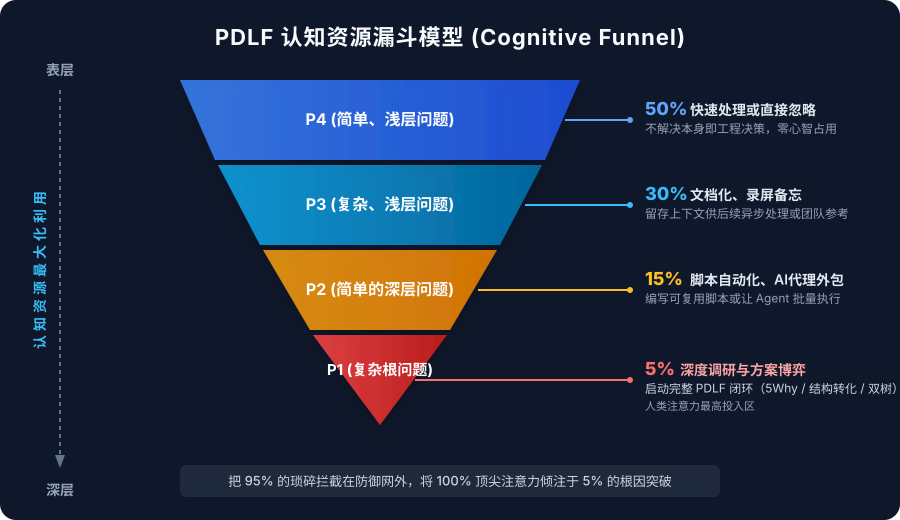

AI 让代码生成趋近免费，却让人类有限的注意力成为全链路唯一的死穴与最昂贵的资产。
↓ 按向下键查看独立开发者真实惨状
Cursor / Copilot 跑了 20 轮，生成 800 行代码。看似忙得热火朝天，实际离最初的目标南辕北辙。
为了解决 A 引入了 B，为了解决 B 引入了 C。单兵开发者通宵达旦，最终在凌晨 4 点心态崩盘。
把手从键盘拿开 10 分钟，写清核心约束。这一步消耗最小，却拯救了后续 90% 的生命。
人类注意力只追随“问题空间”，不追随“任务动作”。
大脑是 CPU 而非硬盘，必须把问题外化为 problem.md 才能终止无意识游走。
↓ 查看 Prompt 质量的断层差距
开发者输入：
AI 反应：盲目建了 4 个联合索引，加了全局互斥锁，内存撑爆，根因依旧。
加载 problem.md：
AI 反应：精准定位函数包裹索引问题，20 秒写出确定性改写与回滚方案。
单兵作战必须建立认知防火墙：将 95% 的琐碎问题拦截在重型思考之外，只把 100% 的顶尖注意力留给 5% 的深水区。
↓ 展开认知资源漏斗模型

UI 像素微调、非致命警告。零脑力消耗，不值得开会或分析。
偶发性边缘 Case。录屏丢进待办，绝不打断当下主线心流。
重复繁琐数据清洗。写一段 Prompt 或脚本交由 Agent 跑完。
人类真正的主战场：核心架构根因、死锁风险。启动完整 5Why。
头痛医头只会让系统越来越脆弱。Diagnose 的使命，是在表象（Symptom）与根因（Root Cause）之间建起牢不可破的因果树。
↓ 查看经典慢查询的因果下钻
监控告警狂响，用户抱怨结账卡顿。直觉反应是“数据库扛不住了要扩容”。
1. 查询耗时超 3s
2. 为什么？走了全表扫描
3. 为什么？索引未命中
4. 为什么？DATE(created_at) 包裹了字段
对索引列使用函数导致 B+Tree 索引失效。只需改写为范围查询，0 成本恢复 5ms 响应。
AI 不是缺少解题智力，而是无法理解现实的模糊性。
Transform 是人类最大的杠杆：改写问题的约束与范围，直到它对 AI 变成一道选择题。
↓ 查看两种问题定义下的执行鸿沟
范围无限大、风险无限高、AI 随意脑补重构代码，导致上线后出现灾难级死锁。
将 DATE(c) = '2026-10-04' 转化为 c >= '2026-10-04 00:00:00' AND c < '2026-10-05 00:00:00'，保留原时区逻辑。
AI 最擅长写出“语法完美但逻辑致命”的假代码。验证不是点点头确认，而是用 V-Model 对齐原始意图，用 FMEA 穷尽恶意攻击解空间。
↓ 查看 FMEA 风险优先级计算
| 潜在失效模式 (Failure Mode) | 严重度 S | 发生度 P | 未知度 U | 风险指数 RPN | 强制防御策略 |
|---|---|---|---|---|---|
| 跨日边界时区错位（UTC vs 本地时区） | 7 | 6 | 5 | 210 (高危) | 编写跨时区单元测试，严格对齐基准时区 |
| 瞬时高并发冲垮数据库连接池 | 9 | 6 | 4 | 216 (高危) | 上线前接入连接池排队与慢查询熔断 |
| 历史冷数据归档查询未建联合索引 | 4 | 3 | 3 | 36 (接受) | 记录到 risk.md 持续监控，无需阻塞发版 |
单兵作战的终极优势是进化速度。每次痛苦的排查，都不该以一句“终于改完了”收场，而必须沉淀为系统永远不会再犯的自动化防线。
↓ 查看单个 Incident 如何变成永久防御
DATE() 陷阱生产环境遭遇全表扫描，P99 飙升。经历 5Why 定位与改写修复。
“任何在 WHERE 索引列上套用不可逆函数的 SQL，均属于高危反模式。”
写进 .cursorrules 或 CI Linter。下次开发时，AI 与编译器会在敲下键盘的第 1 秒当场拦截！
不要把框架当成教条的枷锁。无论你是写代码、搞科研、还是做独立产品——
守住注意力，锁死真问题，剩下的放心交给工具。
↓ 查看你的下周最小行动
在项目根目录敲下这行命令：
事实与数字，不写主观猜测
95% 的琐碎问题果断忽略或录屏
把约束给清，让 AI 成为精准利刃